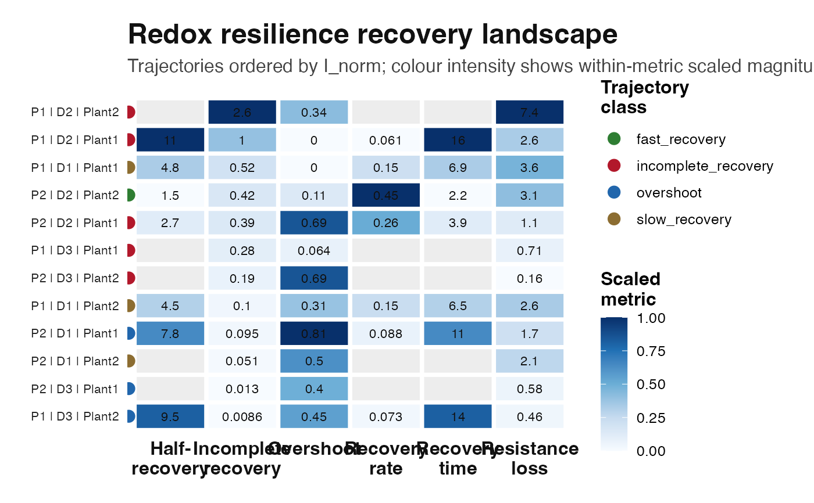

Plot a recovery landscape from RRI perturbation-recovery metrics
Source:R/plot_rri_recovery_landscape.R
plot_rri_recovery_landscape.RdVisualises user-level perturbation-recovery metrics from
rri_recovery_metrics(). Each row is one trajectory and each column is a
core resilience metric. Values are scaled within metric columns to make
amplitudes, overshoot, incomplete recovery, and recovery times comparable.
Arguments
- rec
A data frame returned by
rri_recovery_metrics().- group_cols
Character vector identifying trajectory labels.
- metrics
Character vector of recovery metric columns to plot.
- order_by
Character scalar. Metric used to order trajectories.
- base_size
Numeric. Base font size.
Examples
sim <- simulate_redox_holobiont(
n_plot = 2,
n_depth = 3,
n_plant = 2,
n_time = 12,
p_micro = 20,
seed = 109
)
res <- rri_pipeline_st(
ROS_flux = sim$ROS_flux,
Eh_stability = sim$Eh_stability,
micro_data = sim$micro_data,
id = sim$id,
reducer = "per_domain",
scaling = "pnorm"
)
rec <- rri_recovery_metrics(
res = res,
id = sim$id,
time_col = "time",
group_cols = c("plot", "depth", "plant_id"),
perturb_start = 5,
perturb_end = 7
)
head(rec)
#> plot depth plant_id x0 xmin_perturb xmax_perturb x_extreme
#> 1 P1 D1 Plant1 0.1666895 0.1911321 0.7631028 0.7631028
#> 2 P2 D1 Plant1 0.1441712 0.1501787 0.3859172 0.3859172
#> 3 P1 D2 Plant1 0.2631689 0.0821912 0.9397771 0.9397771
#> 4 P2 D2 Plant1 0.4622820 0.7522711 0.9558848 0.9558848
#> 5 P1 D3 Plant1 0.5581961 0.8904897 0.9563755 0.9563755
#> 6 P2 D3 Plant1 0.6182729 0.8203454 0.9775123 0.9775123
#> perturb_direction xmin_recovery xmax_recovery xeq A A_norm
#> 1 increase 0.17890974 0.3442096 0.2532884 0.5964133 3.5779889
#> 2 increase 0.02753112 0.2285998 0.1579083 0.2417460 1.6767975
#> 3 increase 0.36015518 0.8505589 0.5381607 0.6766081 2.5710030
#> 4 increase 0.14365060 0.8583562 0.2839480 0.4936028 1.0677524
#> 5 increase 0.52236666 0.8870628 0.7136611 0.3981794 0.7133325
#> 6 increase 0.37181540 0.8182219 0.6261845 0.3592394 0.5810370
#> tau_lag O O_norm I I_norm k k_r2
#> 1 0 0.00000000 0.00000000 0.086598865 0.51952194 0.14523048 0.0585174941
#> 2 1 0.11664011 0.80903873 0.013737027 0.09528272 0.08836949 0.0478912959
#> 3 0 0.00000000 0.00000000 0.274991791 1.04492492 0.06116515 0.0204734550
#> 4 0 0.31863142 0.68925765 0.178334058 0.38576897 0.25857627 0.1074052966
#> 5 0 0.03582942 0.06418787 0.155465043 0.27851332 NA 0.0005677983
#> 6 0 0.24645750 0.39862252 0.007911643 0.01279636 NA 0.0307292419
#> k_n k_flag tau_r t_half H trajectory_class
#> 1 5 low_fit_quality 6.885607 4.772739 NA slow_recovery
#> 2 5 low_fit_quality 11.316123 7.843739 NA overshoot
#> 3 5 low_fit_quality 16.349178 11.332387 NA incomplete_recovery
#> 4 5 low_fit_quality 3.867331 2.680630 NA incomplete_recovery
#> 5 5 nonpositive_recovery_rate NA NA NA incomplete_recovery
#> 6 5 nonpositive_recovery_rate NA NA NA overshoot
plot_rri_recovery_landscape(rec)
